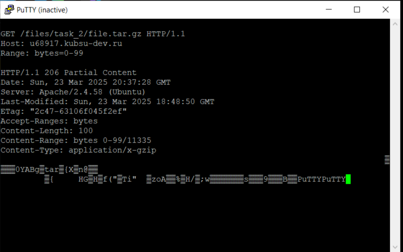

Загружаем файлы в каталоге files на веб-сервер через GIT с помощью PuTTY. Проверяем в браузере работоспособность index.php
Соединяемся c хостом kubsu-dev.ru по стандартному порту 80 в протокле сетевой печати RAW с помощью программы Putty
1. Получили главную страницу сайта kubsu-dev.ru методом GET в протоколе HTTP 1.0
2. Получили внутреннюю страницу сайта u68917.kubsu-dev.ru методом GET в протоколе HTTP 1.1
3. Определяем информацию о файле file.tar.gz, не скачивая его, с помощью запроса HEAD. Информация содержится в заголовке ответа в графе "Content-Length" и состaвляет 11335 байт
4. Определяем медиатип расположенного на удаленном сервере ресурса /image.png с помощью HEAD запроса. Информация содержится в заголовке ответа в графе "Content-Type"
5. Отправляем комментарий на сервер по адресу u68917.kubsu-dev.ru/files/task_2/index.php с помощью POST запроса в теле которого был указан сам комментарий.
6. Получаем первые 100 байт файла /file.tar.gz с помощью GET запроса с заголовком Range, в котором мы указываем, что нужно получить только первые 100 байт
7. Определяем кодировку ресурса /index.php с помощью запроса HEAD с заголовком Accept-Charset, в котором была установлена кодировка utf-8